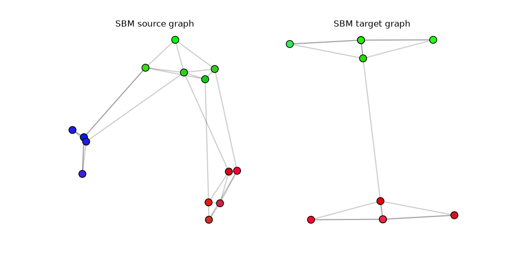
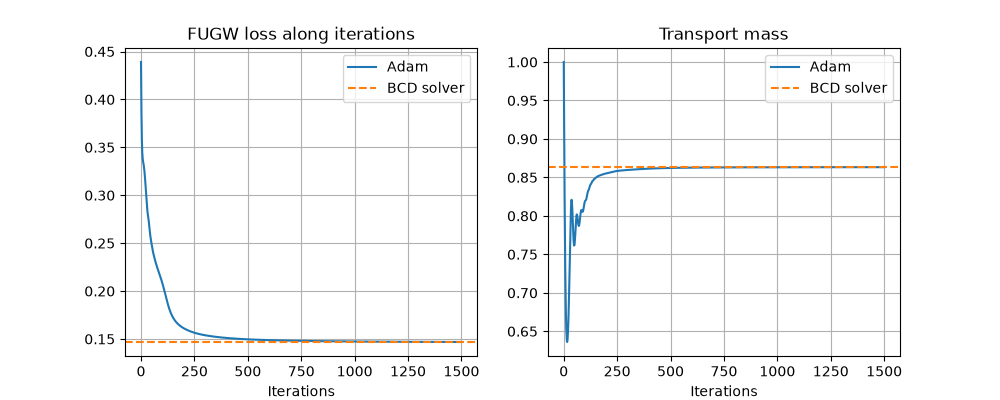
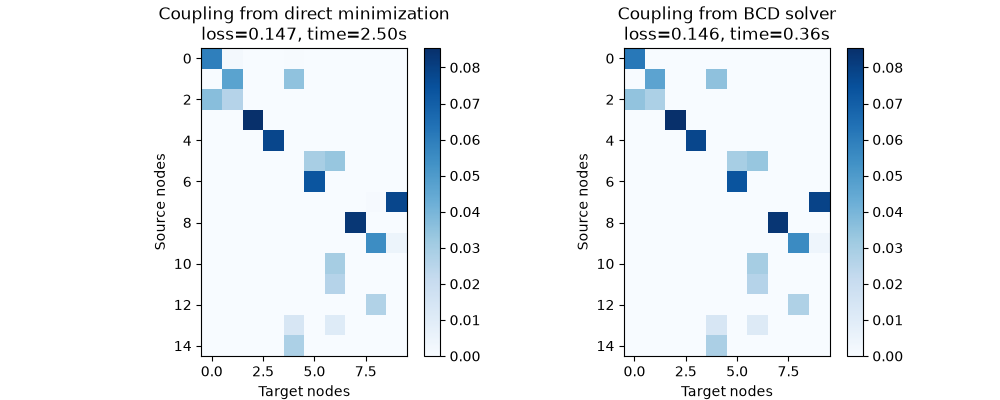

Note
Go to the end to download the full example code.
Solve Fused Unbalanced Gromov Wasserstein with Adam
Since the FUGW loss is differentiable, it can be minimized with first-order optimization. We show how to do this with the loss_fugw_batch function and compare the results with the dedicated FUGW solver fused_unbalanced_gromov_wasserstein.
# Author: Rémi Flamary <remi.flamary@polytechnique.edu>
# Sonia Mazelet <sonia.mazelet@polytechnique.edu>
#
# License: MIT License
# sphinx_gallery_thumbnail_number = 3
import numpy as np
import matplotlib.pylab as pl
import torch
from time import perf_counter
import ot
from ot.batch._quadratic import loss_quadratic_batch, tensor_batch
from ot.gromov import fused_unbalanced_gromov_wasserstein
from sklearn.manifold import MDS
Generation of source and target graphs
rng = np.random.RandomState(42)
def get_sbm(n, nc, ratio, P):
nbpc = np.round(n * ratio).astype(int)
n = np.sum(nbpc)
C = np.zeros((n, n))
for c1 in range(nc):
for c2 in range(c1 + 1):
if c1 == c2:
for i in range(np.sum(nbpc[:c1]), np.sum(nbpc[: c1 + 1])):
for j in range(np.sum(nbpc[:c2]), i):
if rng.rand() <= P[c1, c2]:
C[i, j] = 1
else:
for i in range(np.sum(nbpc[:c1]), np.sum(nbpc[: c1 + 1])):
for j in range(np.sum(nbpc[:c2]), np.sum(nbpc[: c2 + 1])):
if rng.rand() <= P[c1, c2]:
C[i, j] = 1
return C + C.T
def plot_graph(x, C, color="C0", s=100):
for j in range(C.shape[0]):
for i in range(j):
if C[i, j] > 0:
pl.plot([x[i, 0], x[j, 0]], [x[i, 1], x[j, 1]], alpha=0.2, color="k")
pl.scatter(x[:, 0], x[:, 1], c=color, s=s, zorder=10, edgecolors="k")
def get_sbm_labels(n, ratio):
nbpc = np.round(n * ratio).astype(int)
return np.concatenate(
[np.full(count, label, dtype=int) for label, count in enumerate(nbpc)]
)
def get_noisy_one_hot(labels, n_classes, noise_level=0.1):
x = np.eye(n_classes)[labels]
x += noise_level * rng.randn(*x.shape)
return x
n1 = 15
n2 = 10
nc1 = 3
nc2 = 2
ratio1 = np.array([0.33, 0.33, 0.33])
ratio2 = np.array([0.5, 0.5])
P1 = np.array([[0.8, 0.03, 0.0], [0.08, 0.8, 0.03], [0.0, 0.08, 0.8]])
P2 = np.array(0.8 * np.eye(2) + 0.01 * np.ones((2, 2)))
C1 = get_sbm(n1, nc1, ratio1, P1)
C2 = get_sbm(n2, nc2, ratio2, P2)
labels1 = get_sbm_labels(n1, ratio1)
labels2 = get_sbm_labels(n2, ratio2)
# Use noisy one-hot encodings of the SBM classes as node features.
feature_dim = max(nc1, nc2)
x1 = get_noisy_one_hot(labels1, feature_dim)
x2 = get_noisy_one_hot(labels2, feature_dim)
all_features = np.vstack([x1, x2])
feature_min = all_features[:, :3].min(axis=0, keepdims=True)
feature_max = all_features[:, :3].max(axis=0, keepdims=True)
# get 2d positions for visualization
pos1 = MDS(dissimilarity="precomputed", random_state=0, n_init=1).fit_transform(1 - C1)
pos2 = MDS(dissimilarity="precomputed", random_state=0, n_init=1).fit_transform(1 - C2)
colors1 = np.clip(
(x1 - feature_min) / np.maximum(feature_max - feature_min, 1e-15), 0.0, 1.0
)
colors2 = np.clip(
(x2 - feature_min) / np.maximum(feature_max - feature_min, 1e-15), 0.0, 1.0
)
pl.figure(1, (10, 5))
pl.clf()
pl.subplot(1, 2, 1)
plot_graph(pos1, C1, color=colors1)
pl.title("SBM source graph")
pl.axis("off")
pl.subplot(1, 2, 2)
plot_graph(pos2, C2, color=colors2)
pl.title("SBM target graph")
_ = pl.axis("off")

/home/circleci/.local/lib/python3.12/site-packages/sklearn/manifold/_mds.py:735: FutureWarning: The default value of `init` will change from 'random' to 'classical_mds' in 1.10. To suppress this warning, provide some value of `init`.
warnings.warn(
/home/circleci/.local/lib/python3.12/site-packages/sklearn/manifold/_mds.py:752: FutureWarning: The `dissimilarity` parameter is deprecated and will be removed in 1.10. Use `metric` instead.
warnings.warn(
/home/circleci/.local/lib/python3.12/site-packages/sklearn/manifold/_mds.py:735: FutureWarning: The default value of `init` will change from 'random' to 'classical_mds' in 1.10. To suppress this warning, provide some value of `init`.
warnings.warn(
/home/circleci/.local/lib/python3.12/site-packages/sklearn/manifold/_mds.py:752: FutureWarning: The `dissimilarity` parameter is deprecated and will be removed in 1.10. Use `metric` instead.
warnings.warn(
Solve FUGW with Adam
# Even though `loss_fugw_batch` supports batches of problems, we use a
# batch of size 1 here for clarity.
a = ot.unif(C1.shape[0])
b = ot.unif(C2.shape[0])
M = ot.dist(x1, x2)
M /= M.max()
a_torch = torch.tensor(a[None, :])
b_torch = torch.tensor(b[None, :])
C1_torch = torch.tensor(C1[None, :, :])
C2_torch = torch.tensor(C2[None, :, :])
M_torch = torch.tensor(M[None, :, :])
L = tensor_batch(a_torch, b_torch, C1_torch, C2_torch, loss="sqeuclidean")
alpha = 0.5
reg_marginals = 0.5
lr = 5e-2
nb_iter_max = 1500
tol = 1e-7
T0_torch = a_torch[:, :, None] * b_torch[:, None, :]
T_torch = torch.log(torch.expm1(T0_torch)).clone().requires_grad_(True)
optimizer = torch.optim.Adam([T_torch], lr=lr)
loss_iter = []
mass_iter = []
previous_plan_torch = None
tic = perf_counter()
for i in range(nb_iter_max):
optimizer.zero_grad()
# Positive transport plan parameterized as log(1 + exp(T)).
plan_torch = torch.nn.functional.softplus(T_torch)
loss = loss_quadratic_batch(
a_torch,
b_torch,
C1_torch,
C2_torch,
plan_torch,
M_torch,
alpha=alpha,
unbalanced=reg_marginals,
unbalanced_type="kl",
recompute_const=True,
)[0]
loss_iter.append(float(loss.detach()))
mass_iter.append(float(plan_torch.detach().sum()))
if previous_plan_torch is not None:
err = float(torch.sum(torch.abs(plan_torch.detach() - previous_plan_torch)))
if err < tol:
break
previous_plan_torch = plan_torch.detach().clone()
loss.backward()
optimizer.step()
time_adam = perf_counter() - tic
T_adam = torch.nn.functional.softplus(T_torch).detach().cpu().numpy()[0]
Compare with the dedicated FUGW solver
The dedicated solver uses a block coordinate descent (BCD) scheme. We compare the coupling it returns with the one obtained by direct Adam minimization of loss_fugw_batch.
def evaluate_batch_fugw_loss(plan):
plan_torch = torch.tensor(plan[None, :, :], dtype=M_torch.dtype)
loss = loss_quadratic_batch(
a_torch,
b_torch,
C1_torch,
C2_torch,
plan_torch,
M_torch,
alpha=alpha,
unbalanced=reg_marginals,
unbalanced_type="kl",
recompute_const=True,
)[0]
return float(loss.detach())
tic = perf_counter()
result = ot.solve_gromov(
C1, C2, M, a, b, alpha=alpha, reg=0, unbalanced_type="kl", unbalanced=reg_marginals
)
time_bcd = perf_counter() - tic
loss_adam_final = evaluate_batch_fugw_loss(T_adam)
T_bcd = result.plan
loss_bcd_final = evaluate_batch_fugw_loss(T_bcd)
mass_bcd = T_bcd.sum()
pl.figure(2, (10, 4))
pl.clf()
pl.subplot(1, 2, 1)
pl.plot(loss_iter, label="Adam")
pl.axhline(loss_bcd_final, color="C1", linestyle="--", label="BCD solver")
pl.grid()
pl.title("FUGW loss along iterations")
pl.xlabel("Iterations")
pl.legend()
pl.subplot(1, 2, 2)
pl.plot(mass_iter, label="Adam")
pl.axhline(mass_bcd, color="C1", linestyle="--", label="BCD solver")
pl.grid()
pl.title("Transport mass")
pl.xlabel("Iterations")
_ = pl.legend()

Visualize the learned couplings
We visualize the couplings obtained by both methods to compare them. On this example, both methods recover similar couplings, but direct minimization reaches a lower loss_fugw_batch value at the cost of a longer runtime.
vmin = min(T_adam.min(), T_bcd.min())
vmax = max(T_adam.max(), T_bcd.max())
pl.figure(3, (10, 4))
pl.clf()
pl.subplot(1, 2, 1)
pl.imshow(T_adam, interpolation="nearest", cmap="Blues", vmin=vmin, vmax=vmax)
pl.title(
f"Coupling from direct minimization\nloss={loss_adam_final:.3f}, time={time_adam:.2f}s"
)
pl.xlabel("Target nodes")
pl.ylabel("Source nodes")
pl.colorbar()
pl.subplot(1, 2, 2)
pl.imshow(T_bcd, interpolation="nearest", cmap="Blues", vmin=vmin, vmax=vmax)
pl.title(f"Coupling from BCD solver\nloss={loss_bcd_final:.3f}, time={time_bcd:.2f}s")
pl.xlabel("Target nodes")
pl.ylabel("Source nodes")
_ = pl.colorbar()

Total running time of the script: (0 minutes 3.385 seconds)